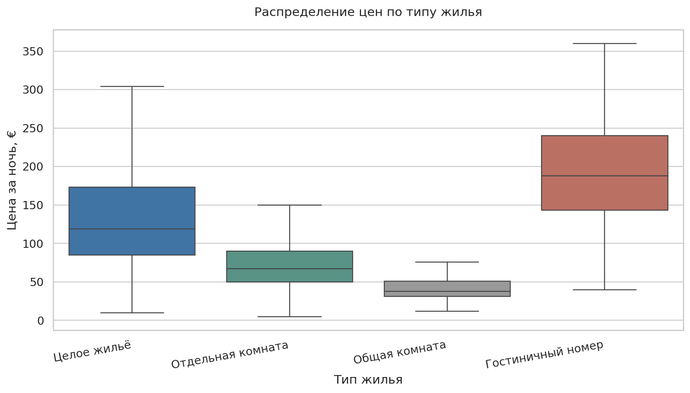

fig_01 / распределение цен / Airbnbанализ рынка краткосрочной аренды в Берлине pet-project
Исследование связи цены аренды Airbnb в Берлине с типом жилья, районом и характеристиками объявления.
Мой вклад: Обработал данные, сравнил группы, провёл корреляционный анализ и визуализировал результаты.
Результат: Наиболее сильная из рассмотренных корреляций цены — с вместимостью жилья (r = 0,59).
инструменты